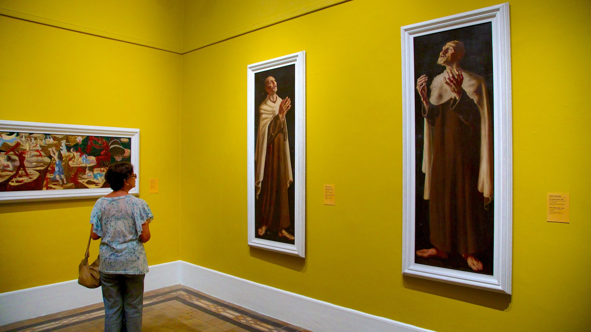
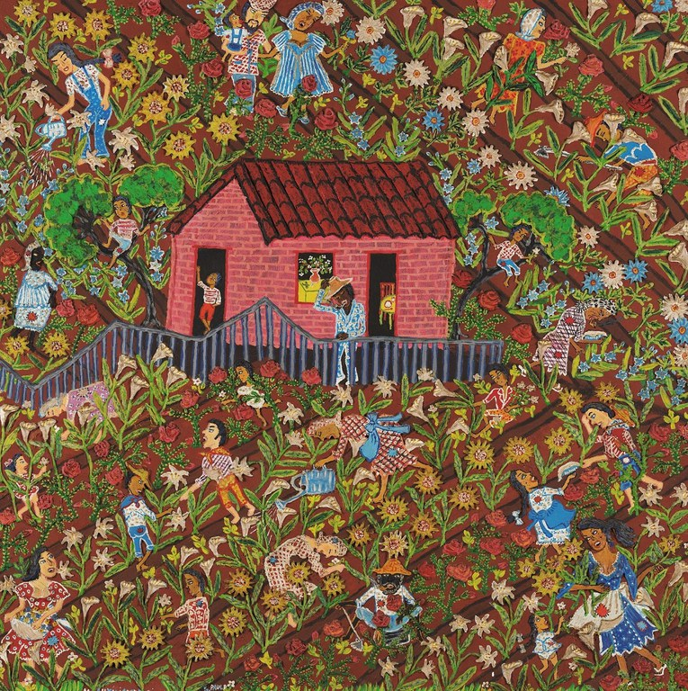

TEXTO EXCLUÍDO
TEXTO INSERIDO
TEXTO SOBRESCRITO
TEXTO SUBSCRITO
TEXTO DE PROGRAMAÇÃO
Citação: Os polvos são moluscos marinhos da classe Cephalopoda, da ordem Octopoda (oito pés), possuindo oito braços fortes e com ventosas dispostos à volta da boca. Como o resto dos cefalópodes, o polvo tem um corpo mole, sem esqueleto interno (ao contrário das lulas) nem externo, como o argonauta. Como meios de defesa, o polvo possui a capacidade de largar tinta, de mudar a sua cor (camuflagem, através dos cromatóforos), e autotomia de seus braços.
Os cefalópodes apresentam macroneurônios que só aparecem nesta classe e são mais desenvolvidos do que qualquer outro invertebrado. Cerca de 1/3 dos neurônios do Polvo estão no cérebro. Teoricamente estes animais desenvolveram grande inteligência devido a necessidades de sobrevivência, por exemplo, devido à fragilidade de seu corpo (ausência de carapaça) em que a inteligência de seus ancestrais certamente aumentava as chances de fuga de ataques de predadores, além de auxiliar na captura com mais eficiência das diversas variedades de presas existentes em seu hábitat.
Estou estudando HTML e CSS
imagens maneiras em uma mesma pasta maneira
vrauuuuuuu

imagens maneiras eiras vraaaauuuu
imagem maneira neira eira sem beira em uma pasta diferente vrauuuuuuu

imagem externa
cansei de piada

pew pew pew vraaaaaauuuuuuuu